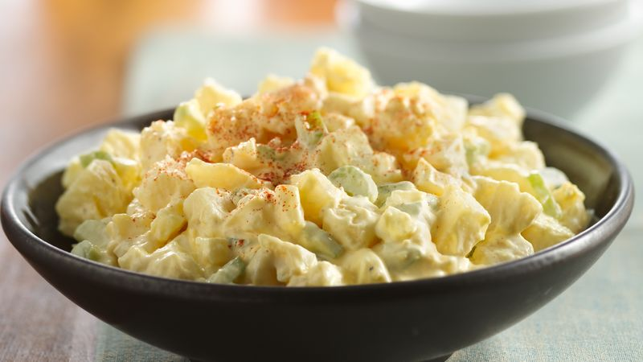

Creamy Potato Salad

Description
This potato salad is an excellent side dish for any occasion! On a hot summer's day, nothing will go better with a meat entree than a nice creamy potato salad.
Ingredients
- 3 pounds yellow mini potatoes
- 12 slices bacon
- 5 hardboiled eggs, chopped
- 1 cup chopped broccoli floretes
- 1 cup diced cheddar cheese
- 1 bottle ranch salad dressing
- 2 1/2 tsp dried dill weed
- 1 tsp salt
- 1/2 tsp ground black pepper
Steps
- Place the potatoes in a saucepan of lightly salted water, bring to a boil, and cook until tender, about 20 minutes. Drain the potatoes in a colander, and let cool.
- Place the bacon in a large, deep skillet, and cook over medium-high heat, turning occasionally, until evenly browned and crisp, about 10 minutes. Drain the bacon slices on a paper towel-lined plate. Snip the cooked bacon into pieces with a scissors, or chop.
- In a large bowl, mix the mini potatoes, chopped bacon, hard-boiled eggs, broccoli, Cheddar cheese, ranch salad dressing, dill weed, salt, and pepper until thoroughly combined, and serve.